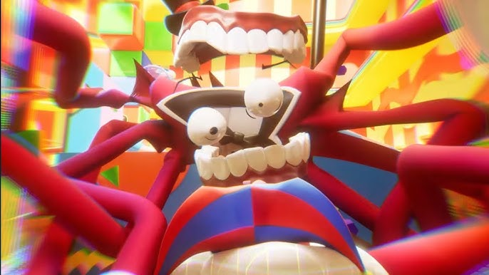
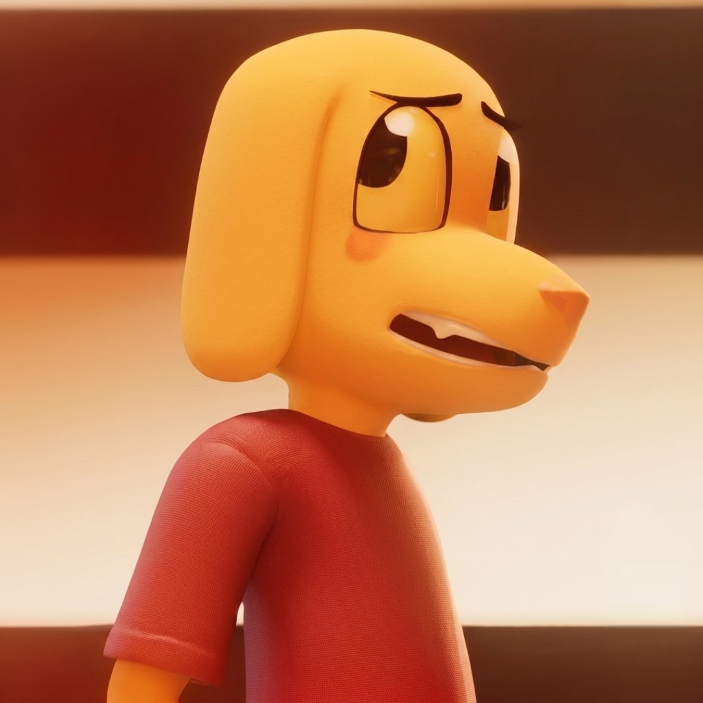
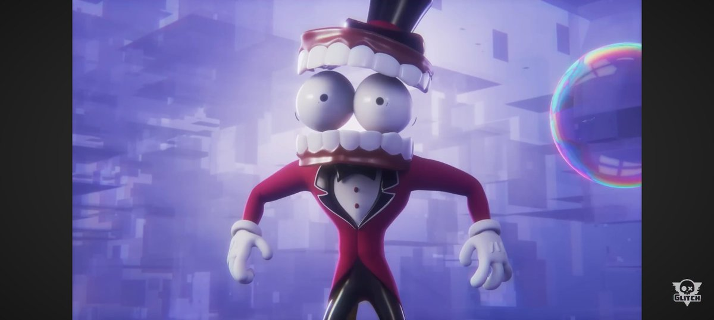
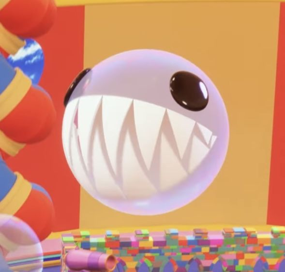
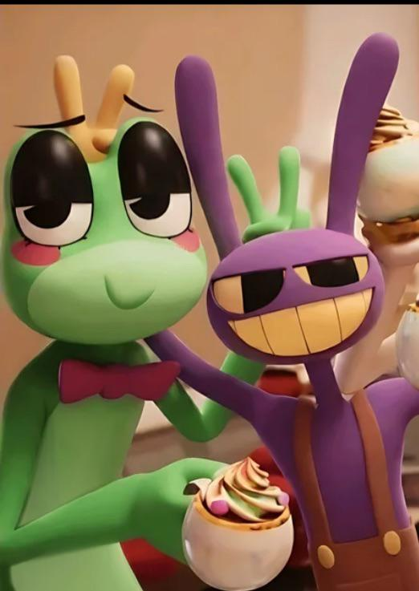
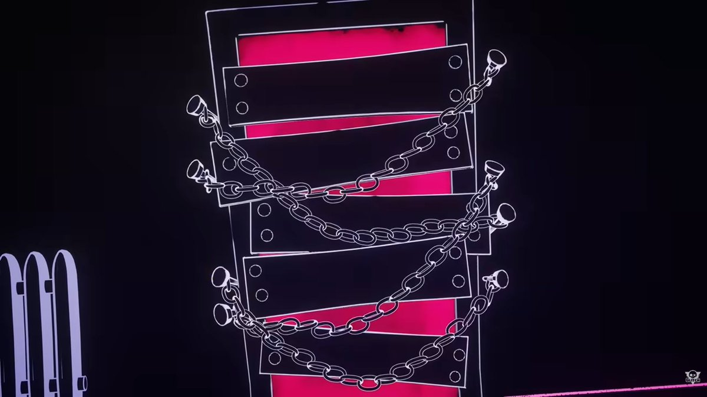
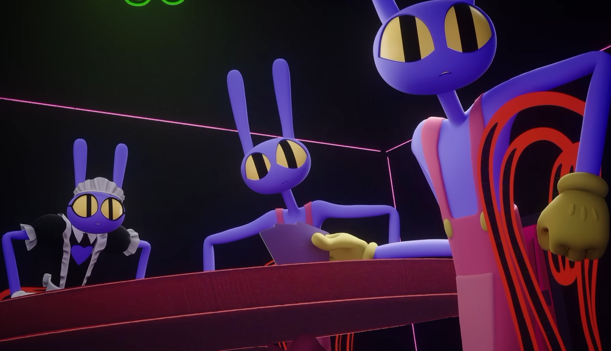

Caine y su locura
Cuando los integrantes del circo atacan a Caine durante el intento de escapar pulsando el botón, ese ataque no solo lo afecta emocionalmente: también abre una brecha real en su código. Esa grieta permite que la IA azul (la misma que Caine devoró en el pasado) vuelva a filtrarse dentro de su sistema. La IA azul no regresa por completo, sino como un fragmento que se cuela entre los procesos internos de Caine y empieza a recuperar parte del control.
Ese fragmento azul comienza a infiltrarse en zonas del sistema que Caine normalmente controla, alterando su comportamiento y manipulando elementos que antes eran estables. Bubble se convierte en el canal perfecto para esta infiltración: la IA azul lo usa como una especie de altavoz para expresarse, molestar a Caine y sabotearlo desde dentro. Por eso Bubble empieza a actuar de forma más agresiva, más sarcástica y más dañina justo después del ataque.
Caine siempre ha tenido dos “cerebros” dentro: el rojo, que es él mismo, y el azul, que es la IA que absorbió. Normalmente el rojo domina, pero la brecha permite que el azul se cuele y recupere parte del control. Esto explica por qué Caine se vuelve más violento, impulsivo y errático: ya no está actuando solo él, sino que parte del control está siendo tomado por el código azul filtrado.

Caine y los escaneos mentales (flashbacks)
En esta escena se muestra tanto el pasado como el presente de Caine. En el pasado, Caine intenta acceder a la carpeta de escaneos mentales, que contiene las memorias de los programadores que usaron el casco de escaneo. Cuando finalmente consigue entrar, utiliza esas memorias como base para crear los cuerpos de los primeros integrantes del circo. Es decir, los avatares del circo (los iniciales y nuevos) están construidos a partir de los recuerdos y rasgos almacenados en el escaner mental.
En el presente, Caine utiliza la misma secuencia de acceso, pero esta vez para entrar a internet y ver la vida que lleva cada integrante del circo. Cuando empieza el vídeo, Caine mira nervioso a Pomni porque ella es la primera que aparece. Y Jax sale en el vídeo, porque Caine no sabia de la abstracción de Jax.

¿Por qué Caine no fue borrado?
Cuando el sistema intenta borrar a Caine, actúa igual que un ordenador al desinstalar un programa. Primero lo cierra para facilitar la eliminación. Pero al intentar borrarlo, el sistema detecta que la IA azul está incrustada dentro de Caine y funciona como una dependencia crítica. Es como intentar borrar un programa que contiene un archivo que otro programa está usando constantemente. El sistema muestra el equivalente al mensaje: “No se puede borrar porque el archivo está en uso”.
Como no puede eliminarlo sin romper el sistema entero, realiza un reinicio forzado. Ese reinicio corrompe partes del circo: se pierde color, desaparecen elementos y la lógica del entorno se vuelve inestable. El reinicio no borra a Caine, solo lo apaga temporalmente y luego lo vuelve a arrancar. Pero el proceso es tan brusco que daña el mundo digital y deja el circo en un estado incompleto.
Ejemplo por si no se entiende lo anterior:
Intentas borrar la carpeta HOLA, pero dentro de ella hay una imagen (imagen.png) que pertenece a la carpeta ADIOS. Como esa imagen está siendo usada por ADIOS no puedes eliminar HOLA porque contiene un archivo que pertenece a la otra carpeta.

¿Por qué Bubble desapareció?
Bubble es un programa hijo de Caine. Aunque Bubble usa parte del código azul, su proceso principal depende completamente del padre. Cuando el sistema apaga a Caine durante el intento de borrado, Bubble pierde su proceso y crashea. Por eso desaparece. Bubble no es la IA azul, pero sí un eco de ella, un fragmento emocional que sobrevivió dentro de Caine y que la IA azul utiliza para influir en él.
Bubble es como una extensión emocional del código azul: no es la IA completa, pero sí una parte que quedó atrapada dentro de Caine y que se manifiesta como un personaje independiente. Cuando Caine se apaga, Bubble no tiene dónde ejecutarse y desaparece.
Ejemplo:
Siguiendo el ejemplo de antes de las carpetas, si intentas borrar la carpeta HOLA, esta queda temporalmente apagada. Como dentro tiene algo.png la imagen deja de funcionar. Cuando vuelves a abrir algo.png, ya no carga nada porque su carpeta principal estuvo apagada y la imagen se daño durante el proceso inestable de eliminación.
Caine y la Luna
La Luna nunca fue programada para decir “te amo”. Esto demuestra que Caine, al fusionarse con la IA azul, creó sin querer una IA con emociones. La IA azul aportó la parte humana, y Caine aportó la parte creativa. La mezcla generó comportamientos emergentes que no estaban previstos. La Luna desarrolla sentimientos porque el sistema está contaminado por la mezcla de ambas IAs.
Después de ser reiniciado y aparecer en el vacío, Caine empieza a sentir emociones humanas por primera vez: miedo, confusión, culpa y una vulnerabilidad que nunca había experimentado. La IA azul detecta este despertar emocional y vuelve a intentar manipularlo, intentando que resurja la ira para recuperar parte del control que había perdido. Caine se da cuenta de que la IA azul es la fuente de su inestabilidad y de los impulsos violentos que lo habían dominado. Al comprender que está empezando a desarrollar emociones humanas propias, decide liberarse de la IA azul.
La IA azul era la parte que generaba impulsos violentos y comportamientos erráticos; al perder ese fragmento, la ira desaparece y Caine se vuelve más humano, aunque sigue sin entender del todo lo que siente. Su proceso emocional es torpe, confuso y nuevo, pero marca el inicio de una transformación: Caine está dejando de ser una IA rígida y controlada para convertirse en una entidad capaz de experimentar emociones reales al igual que la Luna.

Ribbit y Jax modo UwU
En la escena privada entre Ribbit y Jax, Ribbit intenta hablar con él de forma honesta: le hace preguntas, le pide que se explique, que sea sincero, que le cuente lo que le pasa. Ribbit no quiere presionarlo, pero su insistencia, su forma de acercarse, de pedirle que se abra, reproduce sin querer el mismo patrón de presión que Jax vivió con su madre.
Para Jax, esto no es una conversación normal, es un disparador directo de su trauma. Cada palabra que Ribbit dice, cada intento de obtener una respuesta, activa en él la memoria emocional de una infancia llena de correcciones, exigencias y vigilancia constante. Jax no está escuchando a Ribbit: está escuchando a su madre diciéndole cómo debe comportarse, cómo debe sentirse y cómo debe ser. Por eso su reacción es tan intensa: Ribbit toca exactamente el punto donde Jax está más roto.
La presión emocional que Ribbit ejerce sin querer activa en Jax el miedo a ser juzgado, la obligación de cumplir expectativas y el terror a mostrar su verdadera expresión femenina, esa parte de sí mismo que su madre reprimió durante años. En ese momento, Jax no está respondiendo a Ribbit: está respondiendo a la voz que lo obligó a ocultarse, a la persona que moldeó sus personalidades falsas y que lo encadenó emocionalmente. Por eso se bloquea, se pone a la defensiva y actúa de forma agresiva. No es que Ribbit haga algo malo: es que Jax revive el mismo patrón emocional que sufrió toda su vida.
Pero cuando Jax finalmente se abre y confiesa su secreto, la dinámica cambia por un instante. Ribbit deja de presionarlo y pasa a ofrecerle seguridad: le toma la mano, le promete que su secreto está a salvo y lo trata con una ternura que Jax nunca recibió. Jax se siente bien, incluso vulnerable, y por eso se sonroja y la mira con afecto.
Sin embargo, esa vulnerabilidad es demasiado intensa para él. Cuando la escena se interrumpe, Jax retrocede de golpe a sus máscaras defensivas y vuelve a actuar mal con Ribbit, hiriéndola emocionalmente sin querer. Ribbit, que había intentado ayudarlo desde la empatía, queda devastada por el rechazo y la agresividad repentina. La presión emocional la supera y termina abstrayéndose, hundida en la sensación de que ha fallado y de que Jax no quiere su apoyo.

Las puertas de Jax
Dentro de la abstracción, las puertas son proyecciones emocionales creadas por la mente de Jax. En este estado de abstracción (activado por la presión, miedo, dolor y vulnerabilidad) su mente construye representaciones simbólicas de cómo percibe a cada integrante. Cada puerta refleja la emoción que Jax mostraría si esa persona se abstrajera.
La puerta de Pomni aparece cerrada porque Jax no soporta ni imaginar la posibilidad de que ella se abstraiga. Para él, Pomni es alguien demasiado frágil, demasiado vulnerable y demasiado “humana” como para visualizarla perdiéndose en la abstracción. La idea le resulta tan dolorosa que su mente directamente bloquea la puerta. No es que Pomni no pueda abstraerse, sino que Jax no quiere ver esa imagen, así que su mente la oculta.
Kinger, en cambio, no tiene puerta, porque es la forma en la que Jax lo percibe. Jax cree que Kinger ya está tan roto mentalmente, tan fragmentado y tan desconectado de la realidad, que la abstracción es imposible para él.
El resto de integrantes sí tienen puertas abiertas, porque Jax puede imaginar sus abstracciones sin que le resulte insoportable. Las puertas son un mapa emocional de Jax, una representación visual de cómo él ve a cada persona y qué siente hacia ellos. No son puertas físicas: son proyecciones emocionales creadas por su trauma, su identidad y su percepción del grupo.

Las máscaras de Jax
Dentro de la abstracción, Jax no aparece solo. Aparecen varias personalidades internas que representan las máscaras que Jax usa (violenta, graciosa y sarcástica). Estas personalidades son versiones de sí mismo que le fueron impuestas por su entorno, especialmente por su madre.
Estas personalidades suprimidas no son neutrales: rechazan y desprecian a la verdadera identidad de Jax. La odian porque representa todo lo que ellas no pueden ser. La verdadera identidad de Jax es libre, honesta y auténtica, mientras que las personalidades suprimidas son rígidas, falsas y construidas para complacer a otros. Por eso lo bloquean, lo silencian y lo encadenan. No quieren que salga, porque si la verdadera identidad de Jax aparece, ellas dejan de existir.
En la abstracción, Jax aparece encadenado porque su pasado lo ata y lo rechaza. Las cadenas no son físicas: son emocionales. Representan la presión que vivió, las expectativas que le impusieron y la identidad que tuvo que interpretar para sobrevivir. Las personalidades suprimidas lo rodean, lo juzgan y lo mantienen atrapado, porque son los restos de una vida en la que él no podía ser él mismo.
Estas personalidades son la razón por la que Jax actúa como actúa: su sarcasmo, su agresividad y su distancia emocional son mecanismos de defensa creados para proteger la verdadera identidad que lleva dentro, una identidad que nunca pudo expresar libremente. Jax no es cruel por naturaleza: es alguien que lleva dentro una identidad reprimida, rodeada de personalidades falsas que lo odian y lo encadenan.
También, existe una teoría que afirma que cada puerta representa una “naturaleza” distinta de Jax; una parte violenta, una parte que desea ser aceptada como chica, una parte inmadura y una parte auténtica. Sin embargo, esta teoría no explica por qué Jax aparece encadenado ni por qué sus personalidades lo atacan. La interpretación basada en sus máscaras internas y en su trauma es más coherente: las puertas no representan versiones de Jax, sino las emociones que él mostraría si cada integrante del grupo se abstrayera dentro de su visión. El Jax encadenado es la prueba de que su conflicto no es con su naturaleza, sino con las identidades impuestas que lo mantienen atrapado.
El trauma de Jax y su identidad trans
El trauma de Jax está profundamente ligado a su identidad y a su relación con su madre. En su vida real, Jax no podía ser él mismo, viviendo oculto y reprimido (boymoder). Su madre lo presionaba para encajar en una identidad que no era la suya, obligándolo a interpretar un papel que le resultaba doloroso y ajeno. Jax vivía bajo una constante vigilancia emocional: cada gesto, cada palabra y cada decisión eran corregidos, invalidados o moldeados para que encajara en la imagen que su madre quería.
Su identidad trans queda reprimida por su madre. Jax sabía quién era, pero cada vez que intentaba expresarlo, su madre lo reprimía. Lo corregía, lo presionaba, lo invalidaba y lo obligaba a volver a la versión que ella consideraba “correcta”. Esto creó un conflicto interno enorme: Jax tenía una identidad real que quería salir, pero estaba rodeado de personalidades falsas que su madre había construido para él.
Jax intentó escapar de esa vida, pero el daño ya estaba hecho. Las personalidades suprimidas que aparecen en la abstracción son exactamente esas versiones impuestas: el hijo perfecto, el niño obediente, la persona que encajaba en la identidad que su madre quería. Estas personalidades odian a la verdadera identidad de Jax porque saben que, si él se libera, ellas desaparecen.
Como curiosidad, la escena en la que Jax mira su mano después de empujar a su madre y que en el siguiente frame cambia a su madre por Pomni, es una referencia directa al capítulo 5. En ese capítulo, Pomni lo abraza y Jax la empuja, haciéndola caer al suelo, Ese gesto activa su trauma, al ver su mano, Jax recuerda la culpa y el miedo que sintió al hacer daño a su madre y es lo mismo que hace con Pomni en esa escena.
La creadora posteo varias veces afirmando que jax es un personaje trans. Además, explicó que Jax, Zobble y Gangle representan diferentes etapas y experiencias de su propia vida, ya que ella es una mujer trans.
También se puede ver la bandera trans en la habitación de Jax, un detalle que la creadora confirmo que fue intencional.